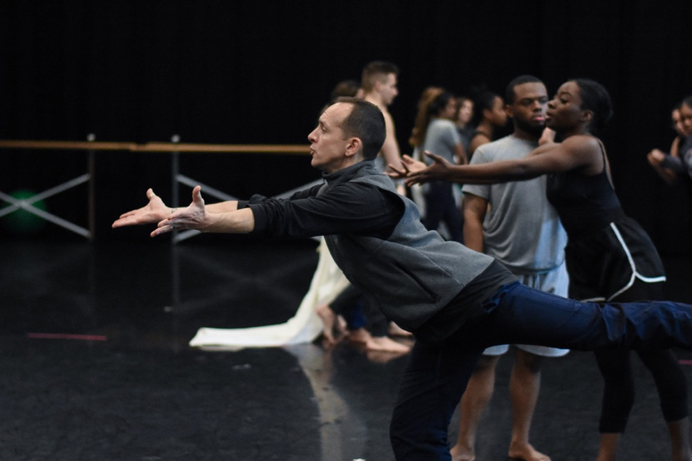
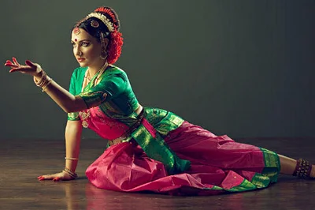

In every dance production, there are a couple of fundamental tasks that you have to handle. In big productions, they are spread out over multiple people; in smaller ones, one person might do all of them. I already covered some of the basics in Dance Theater Production in A Nutshell.
The Producer
The tasks of the producer are to produce a dance piece. Obvious eh? But what does it mean? The producer is in the lead of putting together the best possible team to handle the job and to enable them to do their job without having to worry about anything else.
He is also the one who should keep an outside eye on the work and needs to flag when the involved artists lose their way – meaning that he tells the director and choreographer if they are missing the goal of the production as previously defined. Read about the big questions in the production process if you don’t know what I mean.
The producer takes care of all the orga work around the piece like the budget & accounting, finding sponsors, getting rehearsal rooms, securing showings, accommodation, food & travels (if needed), doing promotion, press work, dealing with collecting societies & taxes and doing everything else that the dance production process runs smooth.
The Choreographer

The choreographer’s job is to create the dance. Depending on her work style, she can do this all alone and then teach the dancers, or she can develop the choreography together with the dancers.
It is also her responsibility to lead the rehearsals and push the dancers to perform as good as they can. She should have an eye on the physical fitness of the dancers and make sure to make recommendations on how to improve it if needed.
The choreographer needs to be well versed in the dance styles that the piece uses, and she must have a good understanding of the music, space, timings, and dynamics.
The Director
The director is the one who is responsible for refining and executing the artistic vision of the production. This means he is in charge of the implementation of the story in narrative pieces or the idea and concepts of a piece if there is no story.
He should also work with the dancers on developing their stage character and guide them on their emotional journey through the piece. He helps to build the world of the piece in the mind of the dancers. And he decides whether an interaction or passage makes sense in the piece or not. Therefore, he feedbacks the choreographer when specific parts of the choreography need to be changed or cut.
The Initiator
The Initiator is the one who started the party. She is the person who got the ball rolling and initiated the whole production. It’s the one who said “let’s do this”. In most cases, the initiator takes one or multiple roles from the production trinity and it rarely happens that someones who initiates a production is not more involved.
Depending on the relationships in the team the Initiator might change the roles that I described. For example, when I start a piece, choose the dancers and bring the producer on board afterward. In that case, the producer had no saying in the cast, which would usually be a part of his job description.